몹시 킹받네
어차피 모든 것을 아시는 왕 앞에서
더 이상 계산하지 마세요.
자격 없는 우리를 안아주시는 진짜 킹,
예수님 품에 그냥 안기세요!
드라마틱 에필로그
마가복음 10:13–16
🎵 사운드를 켜고 감상해주세요
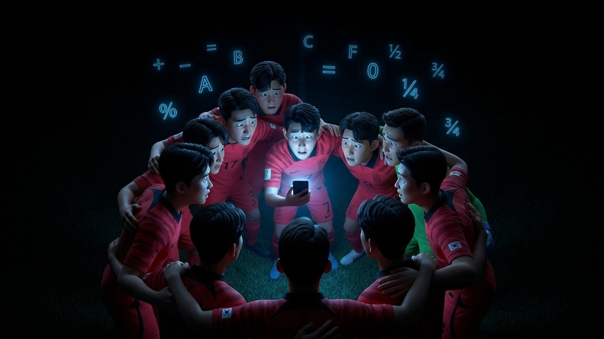
포르투갈전에서 황희찬 선수의 극적인 역전골로 이겼지만,
같은 시간 우루과이 대 가나 경기 결과에 따라 탈락할 수도 있었죠.
골득실, 다득점, 승자승... 온 국민이 머리가 터지게 돌렸던 계산기.
경우의 수가 너무 열받아서 사람들은 그걸 '킹우의 수'라고 불렀습니다.
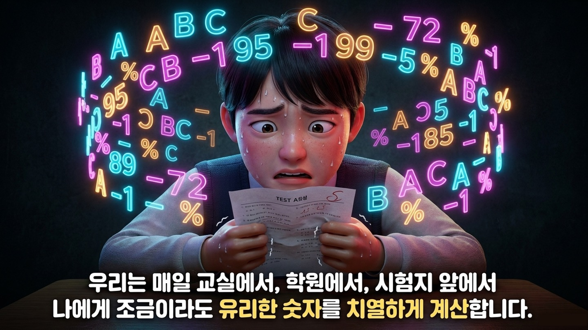
선수들은 4년에 한 번 돌리는 그 킹우의 수를 우리는 매일 돌립니다.
나한테 조금이라도 유리한 숫자를 찾느라 피가 마르는 일상.
이런 상황 자체가 너무 킹받지 않습니까?
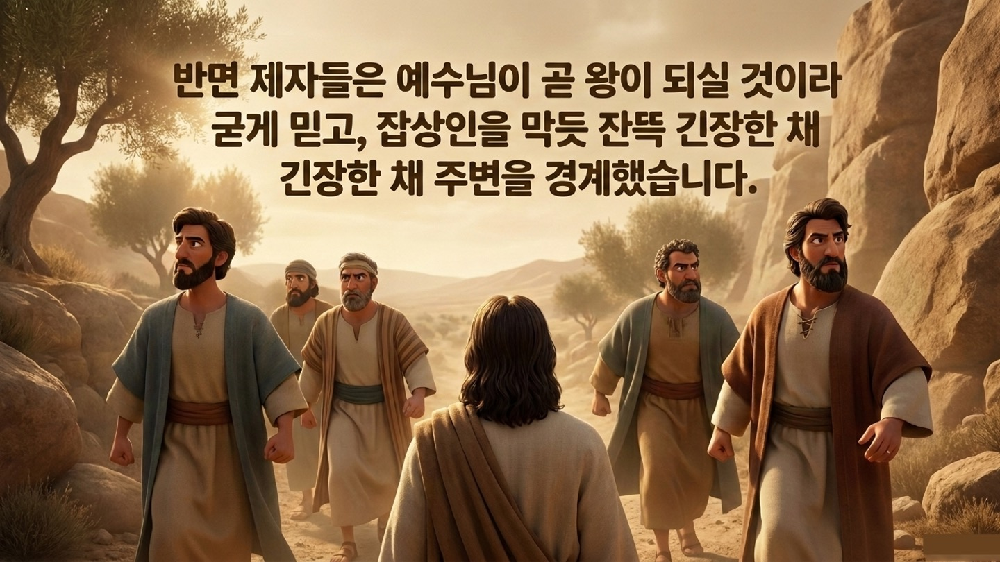
2,000년 전 유대 땅 요단강 건너편 길 위.
제자들은 바리새인들의 함정 질문 공세에 신경이 날카로웠습니다.
게다가 예수님이 이제 예루살렘에서 왕이 되실 거라 굳게 믿고 있었죠.
'지금 우리 스승님, 왕이 되시러 가는 거야. 잡상인 금지, 무단침입 절대 금지!'
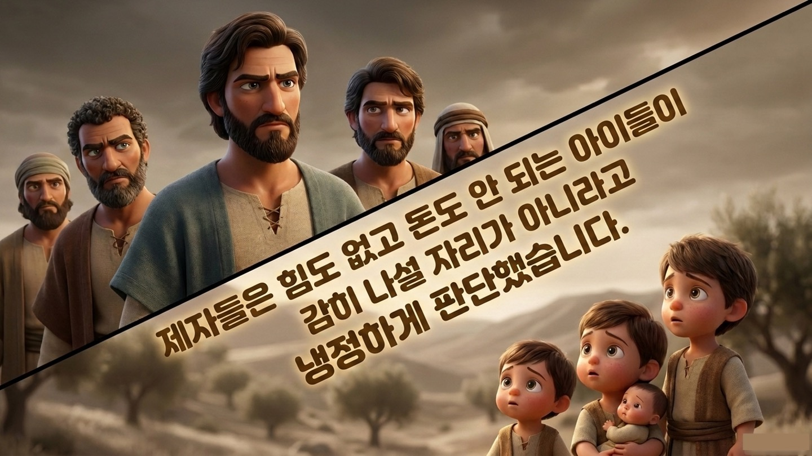
그때 부모들이 아이들을 데리고 예수님께 축복을 받으러 왔습니다.
하지만 1세기 사회에서 어린아이는 인구 조사에도 안 들어가고,
돈도 안 되는, 그저 귀찮은 존재였습니다.
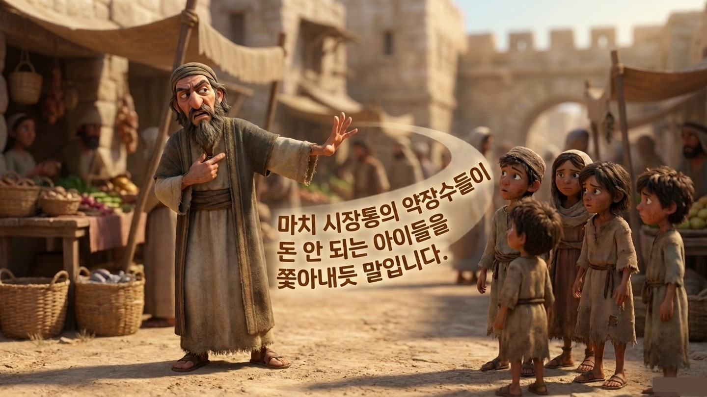
제자들은 부모와 아이들을 '꾸짖었습니다'.
여기 쓰인 헬라어 '에피티마오'는 예수님이 귀신을 쫓거나 폭풍우를 잠잠하게 하실 때 쓰던 단어예요.
예수님께 묻지도 않고, 자기들 기준에 '자격 미달'이라고 심사해서
확신에 차서 아이들을 귀신 내쫓듯 밀어내버린 겁니다.
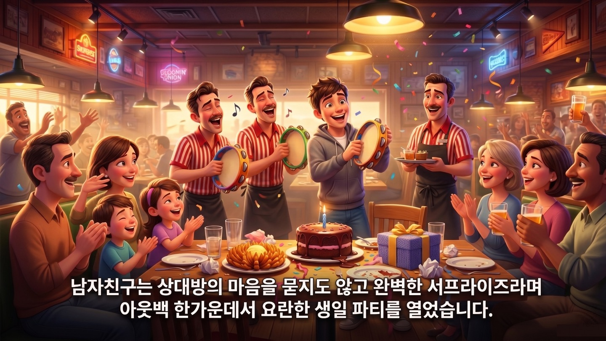
MBTI E가 100인 사람이 I가 100인 여자친구에게 서프라이즈를 합니다.
'생일엔 아웃백에서 직원 세 명이 탬버린을 치며 노래해야 감동이지!'
주변 수십 명의 시선이 꽂히고, 남자친구는 하늘을 날듯 벅차올랐지만
정작 여자친구는 얼굴이 새빨개져서 도망치고 싶었던 공개 처형이었습니다.
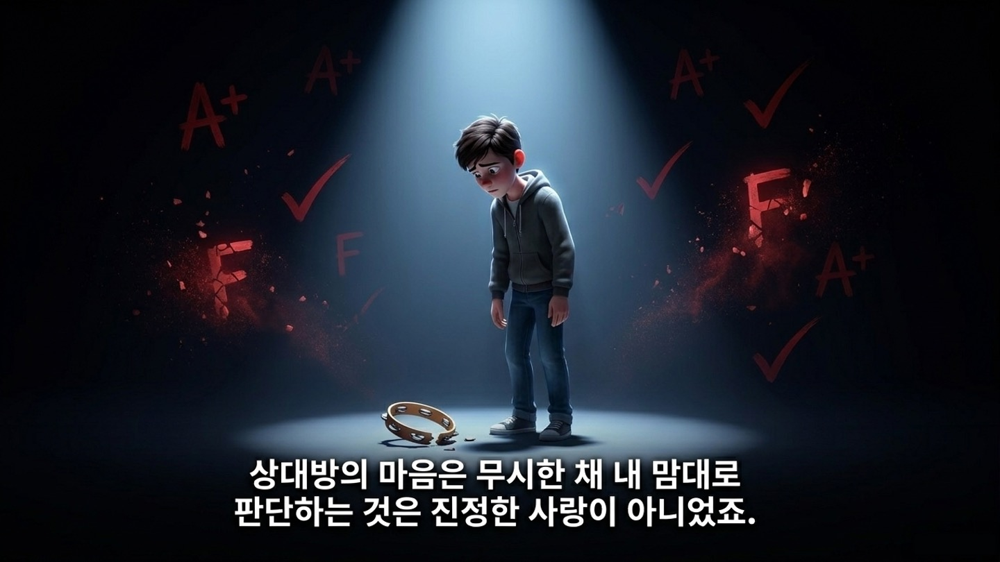
이 사람이 뭘 원하는지는 관심 없이, 내 기준에 맞춰 사랑을 준 겁니다.
'내가 이만큼 해줬으니까, 너는 이만큼 감동받아야 돼.'
제자들이 예수님 앞에서 한 행동도 똑같았습니다.
내 기준에 이 정도는 되어야 한다며 세상의 채점표를 들이댄 겁니다.
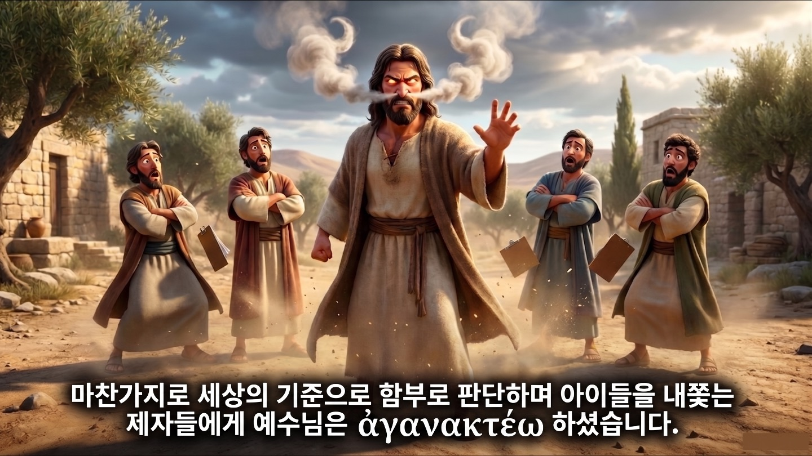
죄인들 앞에서는 한없이 부드러우셨던 예수님이
가장 아끼던 제자들을 향해 '아가낙테오(몹시 화를 내다)' 하셨습니다.
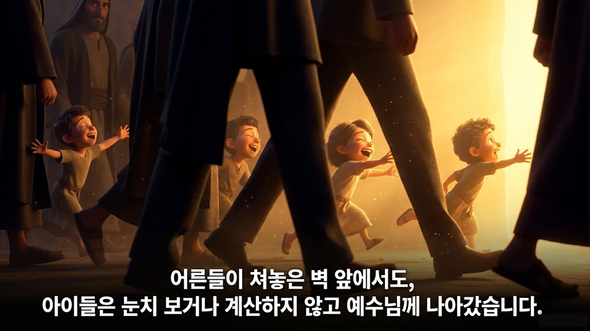
어른들은 끊임없이 머릿속으로 '킹우의 수'를 돌리고 계산했지만,
이 작은 아이들은 계산 자체를 하지 않았습니다.
"내가 가도 될까? 내 모습이 이런데 예수님이 날 반겨주실까?"
그런 생각 없이, 그냥 자기를 안아주실 그분의 품으로 비집고 들어갔습니다.
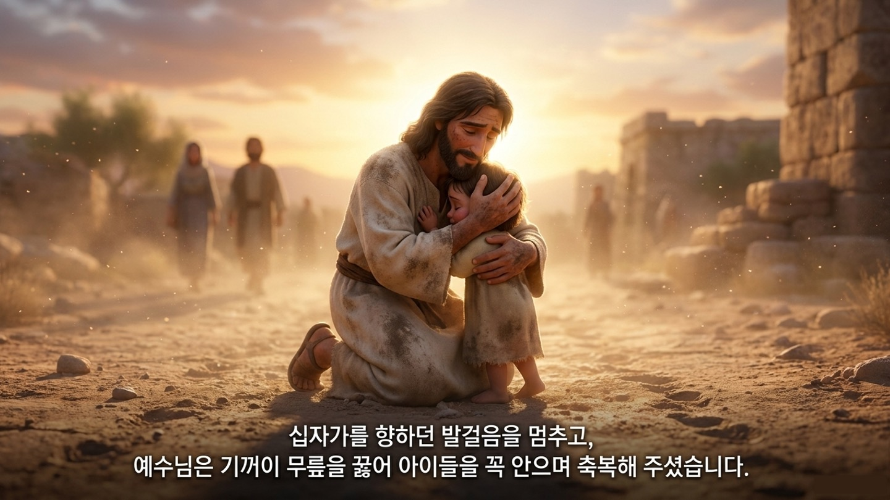
십자가를 지러 예루살렘으로 가시는 긴박한 상황.
하지만 예수님은 죽으러 가는 길 위에서 발걸음을 멈추셨습니다.
무릎을 꿇고 아이들을 한 명씩 안아주시고 꽉 끌어안으셨습니다.
한 명, 한 명을 위해 두 손을 얹어 복을 빌어주셨습니다.
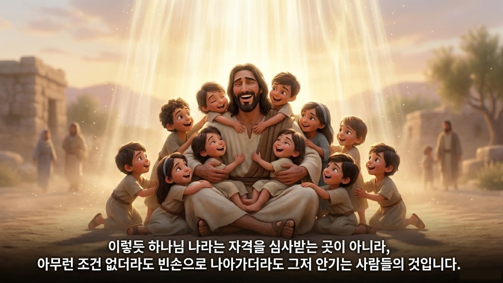
하나님 나라는 자격을 심사해서 점수를 쌓아 들어가는 곳이 아닙니다.
아이들처럼 아무것도 한 것 없이, 그저 빈손으로 나아가 안기는 곳입니다.
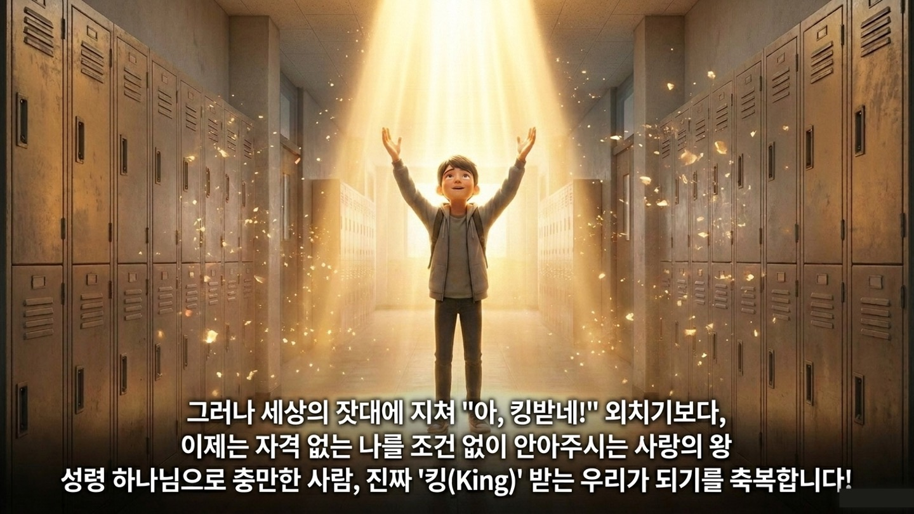
내일 학교에 가면 세상은 또 여러분을 채점하고 줄을 세울 겁니다.
다시 "몹시 킹받네" 하는 일상이 시작되겠죠.
하지만 세상이 여러분을 밀어낼 때, 그분은 밀어내지 않으셨습니다.
자격증을 요구하지 않고, 빈손이어도 무릎 꿇고 안아주신
예수님이 우리의 '진짜 킹'이십니다.
세상의 '킹받는' 계산에 더 이상 휘둘리지 말고, 영원한 사랑의 왕이신 예수님으로, 그 진정한 '킹'으로 충만해지는 여러분이 되기를 축복합니다!
💬 이번 주 가족 식탁 질문
"나는 평소에 내 쓸모와 자격을 평가받는 것에 얼마나 민감한가요? 자격 없는 나를 무릎 꿇고 안아주신 '진짜 킹' 예수님의 사랑을 생각하며 서로 격려해 봅시다."
🙏 부모님의 축복 기도
"하나님, 세상은 끊임없이 성적과 자격으로 우리 아이를 채점하지만, 예수님은 빈손인 우리 아이를 무릎 꿇고 안아주셨음을 기억하게 하소서. 그 사랑의 품에 안겨 평안과 용기를 누리는 우리 자녀 되게 하옵소서. 예수님의 이름으로 기도합니다. 아멘."
어차피 모든 것을 아시는 왕 앞에서
더 이상 계산하지 마세요.
자격 없는 우리를 안아주시는 진짜 킹,
예수님 품에 그냥 안기세요!